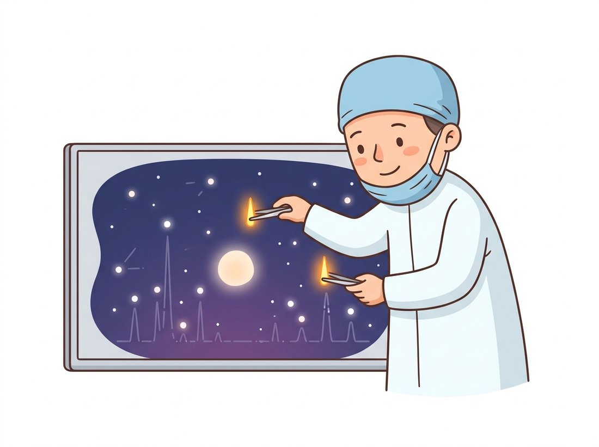

"I deleted every frequency above the cutoff, exactly as designed. The image rang like a struck bell. Nobody warned me that being decisive has side effects."
A Heavy-Handed Ideal Low-Pass Filter
Filtering in the frequency domain is nothing more than multiplying the spectrum, element by element, by a designed mask called a transfer function, and the entire craft is choosing a mask whose shape does not create artifacts of its own. Every spatial kernel from Chapter 3 secretly is such a mask, by the convolution theorem. Working with the mask directly buys you three things: filters too large to be practical as kernels, exact control over which frequencies live and die, and operations like periodic-noise removal that no small spatial kernel can express cleanly.
Section 4.2 built the transform machinery; this section uses it as a workbench. The recipe never changes: transform the image, multiply by a transfer function $H(u, v)$, transform back. What changes is the shape of $H$, and the section's running lesson is that the shape of the cut matters as much as where you cut. We will watch the most intuitive design (a hard cutoff) produce the worst artifacts, understand exactly why through the Gibbs phenomenon from Section 4.1, and end with the one filter family that spatial convolution genuinely cannot replace: the notch.
1. Filtering as Spectrum Sculpting Beginner
The full pipeline, with the shift conventions made explicit, is:
$$g(x, y) = \mathcal{F}^{-1}\Big[\, H(u, v) \cdot \mathcal{F}\big[f(x, y)\big] \,\Big]$$
where $H$ is built in centered coordinates (so it must multiply a shifted spectrum, per Figure 4.2.1). Since most useful filters care only about how far a frequency is from the center, not its direction, we first compute a radial distance grid and then express every filter as a function of it:
# Build the reusable filtering scaffold for this section: a radial distance
# grid (zero at the spectrum center) and an apply_filter helper that handles
# both fftshift conventions and returns the real part of the result.
import numpy as np
from skimage import data
img = data.camera().astype(np.float64)
def radial_distance(shape):
"""Distance of each (centered) frequency bin from the spectrum center."""
h, w = shape
yy, xx = np.ogrid[:h, :w]
return np.sqrt((yy - h / 2) ** 2 + (xx - w / 2) ** 2)
def apply_filter(image, H):
"""Transform, multiply by the centered transfer function H, invert."""
F = np.fft.fftshift(np.fft.fft2(image))
return np.real(np.fft.ifft2(np.fft.ifftshift(F * H)))
D = radial_distance(img.shape) # same shape as img, zero at centerBefore designing new masks, note what this view says about old friends. The Gaussian blur of Chapter 3 has a transfer function that is itself a Gaussian (wide kernel, narrow $H$, and vice versa); the box filter's $H$ is a sinc function that dips negative, which is the frequency-domain explanation of the box filter's odd artifacts on fine patterns. A filter's spatial and spectral faces are two views of one object, and you can design on whichever side is clearer, then translate.
2. Three Low-Pass Designs: Ideal, Butterworth, Gaussian Intermediate
A low-pass filter keeps frequencies near the center (smooth content) and attenuates the rest (detail, edges, noise). The three classical designs differ only in how abruptly they say no:
$$H_{\text{ideal}}(u,v) = \begin{cases} 1 & D(u,v) \le D_0 \\ 0 & D(u,v) > D_0 \end{cases} \qquad H_{\text{btw}}(u,v) = \frac{1}{1 + \big[D(u,v)/D_0\big]^{2n}} \qquad H_{\text{gauss}}(u,v) = e^{-D^2(u,v) / 2 D_0^2}$$
Here $D_0$ is the cutoff radius and $n$ the Butterworth order, which dials its steepness anywhere between Gaussian-gentle ($n = 1$) and ideal-brutal ($n \to \infty$). Figure 4.3.1 plots the three profiles; the only visual difference is the sharpness of the shoulder, and that shoulder is the whole story.
# Construct the three classic low-pass transfer functions at one cutoff and
# apply each to the image. They differ only in how abruptly they roll off,
# which is exactly what governs how much spatial ringing each one produces.
D0 = 30.0 # cutoff radius, in frequency bins
H_ideal = (D <= D0).astype(np.float64)
H_butter = 1.0 / (1.0 + (D / D0) ** (2 * 2)) # Butterworth, order n = 2
H_gauss = np.exp(-(D ** 2) / (2 * D0 ** 2))
lp_ideal = apply_filter(img, H_ideal) # blur + ripples hugging every edge
lp_butter = apply_filter(img, H_butter) # blur, only a whisper of ringing
lp_gauss = apply_filter(img, H_gauss) # pure blur, zero ringingRun the code and look closely at the ideal-filtered image: every strong edge has ripples radiating from it, like a pond after a stone. This is the ringing artifact, and it is the Gibbs phenomenon of Section 4.1 in its adult form. The hard spectral cutoff is itself an edge, and an edge in one domain is an oscillation in the other: the ideal filter's spatial form is a 2D sinc whose decaying lobes stamp themselves around every feature they convolve with.
The spatial and frequency domains are bound by a duality: a discontinuity in either domain forces slowly decaying oscillations in the other. A hard frequency cutoff rings in space (the ideal low-pass filter); a hard spatial edge demands frequencies out to infinity (the square wave of Section 4.1). Every practical filter design is a negotiated settlement with this duality, and the Gaussian, which is smooth in both domains at once, is the negotiation's most famous diplomat. When you see ripples around edges in any processed image, suspect that something, somewhere, applied a too-sharp spectral cut.
3. High-Pass Filtering and Sharpening Intermediate
Every low-pass design yields a high-pass twin for free: $H_{\text{HP}} = 1 - H_{\text{LP}}$. A pure high-pass result keeps only edges and texture floating on a mid-gray void (the DC term is gone, so the mean is zero), which is useful for inspection but rarely the goal. The practical sharpening tool is high-frequency emphasis: keep the whole image and add back an extra helping of its high frequencies,
$$H_{\text{hfe}}(u, v) = a + b \cdot H_{\text{HP}}(u, v)$$
with $a \approx 1$ preserving the original and $b$ controlling the boost. This is precisely the unsharp masking of Chapter 3 wearing frequency-domain clothes: there you computed "image plus $b$ times (image minus blur)", and expanding that expression gives exactly $1 + b(1 - H_{\text{blur}})$ as a spectral multiplier.
# Sharpen by high-frequency emphasis: form a ringing-free Gaussian high-pass,
# then keep the whole image (a = 1) and add back a boosted helping of its high
# frequencies (b = 1.2). This is unsharp masking expressed as a spectral mask.
H_hp = 1.0 - H_gauss # Gaussian high-pass: smooth, no ringing
H_hfe = 1.0 + 1.2 * H_hp # a = 1 keeps the image, b = 1.2 boosts detail
sharp = np.clip(apply_filter(img, H_hfe), 0, 255)
# Edges and fine texture visibly crisper; flat regions untouched, because
# H_hfe equals 1.0 exactly at the spectrum center where smooth content lives.A venerable cousin worth recognizing on sight: take the log of the image first, then high-pass filter, then exponentiate. Because illumination (smooth, low-frequency) and surface reflectance (detailed, high-frequency) combine multiplicatively, the log turns their product into a sum the filter can separate, evening out lighting while boosting detail. It is a frequency-domain answer to the uneven-illumination problem that Chapter 2 attacked with adaptive histogram methods, and a preview of the illumination-reflectance reasoning that returns in Chapter 7.
4. Notch Filters: Surgical Removal of Periodic Noise Advanced
Now for the filter family that justifies the whole frequency-domain detour. Periodic interference, scanner banding, electrical hum coupled into a sensor, halftone dots from printed sources, screen-door moiré, is spread across every pixel in the spatial domain, hopelessly entangled with the signal. But in the frequency domain, a periodic pattern is a point: one conjugate pair of bright spikes at its frequency (visible in Figure 4.3.2). A notch filter zeroes a small disk around each spike and leaves everything else untouched. No spatial kernel of reasonable size can do this; the notch's spatial equivalent is an oscillating pattern as large as the image itself. The illustration below captures the surgical spirit of the operation: pluck out the offending spike pair and let the picture heal around the holes.

# Remove periodic banding with a notch filter: the interference is a single
# conjugate pair of spikes in the spectrum, so zeroing a tiny disk around each
# spike deletes the noise while leaving all the natural image energy intact.
h, w = img.shape
yy, xx = np.mgrid[0:h, 0:w]
noisy = img + 25 * np.sin(2 * np.pi * 60 * yy / h) # 60-cycle horizontal banding
def notch_mask(shape, centers, radius=6):
"""All-ones mask with zeroed disks at given (row, col) offsets from center."""
hh, ww = shape
Y, X = np.ogrid[:hh, :ww]
mask = np.ones(shape, dtype=np.float64)
for dv, du in centers:
cy, cx = hh / 2 + dv, ww / 2 + du
mask[(Y - cy) ** 2 + (X - cx) ** 2 <= radius ** 2] = 0.0
return mask
# The banding lives at (v, u) = (+60, 0) and its conjugate (-60, 0)
H_notch = notch_mask(img.shape, centers=[(60, 0), (-60, 0)])
clean = apply_filter(noisy, H_notch)
# The banding vanishes completely; the tiny residual difference from the
# original is the sliver of true image energy that shared those two bins.In production you rarely hard-code spike positions: detect them as local maxima of the log-magnitude spectrum beyond some radius (excluding the natural center blob and axis streaks), then notch each detection and its conjugate. Soft-edged notches (a small inverted Gaussian rather than a hard zero disk) avoid introducing miniature ringing of their own, the same lesson as Figure 4.3.1 at a smaller scale.
Who: The imaging lead of a national library's newspaper digitization program, scanning roughly 1.2 million pages spanning 1880 to 1990.
Situation: Old newspapers print photographs as halftone dot screens. Scanned at archival resolution, the dot lattice survives, and it both degrades OCR on adjacent text and produces severe moiré when pages are rendered at reading sizes on the archive's website.
Problem: Gaussian blurring strong enough to erase the dots also erased small type. Median filtering helped the text but left blotchy artifacts in the photographs. Every spatial filter faced the same impossible trade, because the halftone occupies the same spatial neighborhoods as the content.
Decision: The team added an automated notch stage: detect the halftone's spectral peaks per scan (the dot screen's frequency varied by decade and printer), zero each peak pair with a soft Gaussian notch, and only then apply a mild low-pass tuned for the rendering size.
Result: OCR character error rate on photo-adjacent text fell from 8.9 to 3.6 percent across the validation sample, moiré complaints from the web archive's readers effectively stopped, and the stage added only milliseconds per page since it rode on FFTs already computed for quality checks.
Lesson: Interference that is periodic is a point defect in frequency space. Find the points, remove the points, and the spatial domain heals around them.
Audio engineers have been doing this for a century without ever opening an image: the "notch" you place over a spectral spike is the exact same idea as the 50 or 60 Hz hum filter built into every guitar amp and recording console, one narrow band deleted, everything else left alone. The mains hum that buzzes through a cheap pickup and the scanner banding that ruins an archival page are the same enemy, a single bright dot in a spectrum, and they surrender to the same surgical cut.
Our scaffold plus filter construction comes to roughly 30 lines once you add padding and color handling. scikit-image ships the whole pipeline as one call:
from skimage.filters import butterworth
low = butterworth(img, cutoff_frequency_ratio=0.06, high_pass=False, order=2)
high = butterworth(img, cutoff_frequency_ratio=0.06, high_pass=True, order=2)A 30-to-1 reduction for the standard cases. Internally it builds the squared Butterworth response, performs the forward and inverse FFTs, supports optional edge padding (npad) to suppress boundary artifacts from the DFT's implicit tiling, and handles color images via channel_axis. Notch filtering, being inherently bespoke, is the one design you will still assemble by hand from Code 4.3.4's parts.
Hand-designed transfer functions have learned descendants. Global Filter Networks (GFNet, NeurIPS 2021) make $H(u,v)$ a trainable parameter tensor: the network literally learns a bank of frequency-domain masks as its token mixer, and the learned masks turn out smooth and low-pass-heavy, echoing this section's designs. Fourier Domain Adaptation (FDA, CVPR 2020) filters between domains, transplanting low-frequency amplitude from real photos onto synthetic renders. And the idea of scheduling a low-pass cutoff over time now regulates 3D reconstruction: FreGS (CVPR 2024) anneals frequency content from coarse to fine while optimizing 3D Gaussian splats, preventing early overfitting to high frequencies, conceptually the same coarse-to-fine discipline that drives the pyramids of Section 4.5 and, one part later, the noise schedules of diffusion models, which destroy high frequencies first and regenerate them last.
Build one self-contained script, freq_studio.py, that loads an image, displays its magnitude spectrum, applies any of three frequency-domain filters (Gaussian low-pass, Butterworth high-pass, automatic notch), and reports a quantitative quality score, then rescues a synthetically corrupted photograph that no single spatial filter can clean. This is the chapter's pixels-to-spectrum-and-back pipeline assembled into a tool you can point at any image.
What You'll Practice
- Computing and displaying a centered log-magnitude spectrum with
numpy.fft(Sections 4.1 and 4.2). - Building radial transfer functions $H(u,v)$ and applying them by spectrum multiplication (Section 4.3).
- Locating periodic-noise spikes automatically and deleting them with conjugate-symmetric notches.
- Scoring a restoration with PSNR and comparing the notch approach against a blunt low-pass.
Setup
pip install numpy scipy scikit-image matplotlibNo image files needed: the lab uses skimage.data.camera() and synthesizes its own periodic corruption, so the script runs start to finish on any machine.
Put the section's filtering concepts into practice below. Work through the steps in order; each one prints or plots a checkpoint so you can confirm progress before moving on. A complete reference solution is folded at the end.
Step 1: Load an image and show its spectrum
Establish the forward half of the pipeline: read a grayscale float image and display its centered log-magnitude spectrum so later steps have something to sculpt.
import numpy as np
import matplotlib.pyplot as plt
from skimage import data, img_as_float
img = img_as_float(data.camera()) # 512x512 grayscale in [0, 1]
def log_spectrum(im):
# TODO: return the centered log-magnitude spectrum of im.
# Hint: np.fft.fft2 -> np.fft.fftshift -> np.log1p(np.abs(...))
...
plt.imshow(log_spectrum(img), cmap="gray"); plt.title("Spectrum"); plt.show()Hint
The DC term dominates the linear magnitude, so the spectrum looks black without the log. np.log1p(x) computes $\log(1+x)$ and avoids $\log 0$.
Step 2: Build a radial distance grid and one transfer function
Every radial filter in this chapter is a function of distance from the spectrum center. Build that grid once, then express a Gaussian low-pass on top of it.
def radial_grid(shape):
rows, cols = shape
u = np.arange(rows) - rows // 2
v = np.arange(cols) - cols // 2
U, V = np.meshgrid(v, u) # note: meshgrid is x,y order
return np.sqrt(U**2 + V**2)
def gaussian_lowpass(shape, d0):
D = radial_grid(shape)
# TODO: return the Gaussian transfer function H = exp(-D^2 / (2 d0^2))
...Hint
The Gaussian transfer function is $H(u,v) = e^{-D^2 / (2 D_0^2)}$ where $D$ is the radial grid and $D_0$ is the cutoff radius in frequency bins.
Step 3: Apply a filter by multiplying the shifted spectrum
Wrap the transform, multiply, inverse-transform recipe into one reusable apply_filter so any transfer function from this section can drive it.
def apply_filter(im, H):
F = np.fft.fftshift(np.fft.fft2(im))
# TODO: multiply by H, inverse-shift, inverse-transform, return the real part
...
blurred = apply_filter(img, gaussian_lowpass(img.shape, d0=40))Hint
Reverse the order on the way back: np.fft.ifft2(np.fft.ifftshift(F * H)).real. Keep only .real because tiny imaginary residue is numerical noise.
Step 4: Synthesize periodic corruption
Create the problem the notch will solve: add two oriented sinusoids whose energy lands as bright off-center spikes in the spectrum, the kind no spatial blur can remove without destroying detail.
def add_periodic_noise(im, amp=0.3):
rows, cols = im.shape
y, x = np.mgrid[0:rows, 0:cols]
# TODO: add amp * (cos over a diagonal wave + cos over a vertical wave)
# Hint: 2*pi*(fx*x/cols + fy*y/rows) with a couple of integer cycle counts
...
noisy = add_periodic_noise(img)
plt.imshow(log_spectrum(noisy), cmap="gray"); plt.title("Corrupted spectrum"); plt.show()Hint
Use cycle counts in the tens, for example fx, fy = 40, 60, so the spikes sit well away from the DC center and are easy to detect in Step 5.
Step 5: Detect the spikes and notch them automatically
Find the interference as local maxima of the log-magnitude spectrum outside a central exclusion radius, then place a soft Gaussian notch over each spike and its conjugate partner.
from scipy.ndimage import maximum_filter
def find_spikes(im, exclude=20, k=2):
S = log_spectrum(im)
rows, cols = S.shape
cy, cx = rows // 2, cols // 2
D = radial_grid(S.shape)
peaks = (S == maximum_filter(S, size=9)) & (D > exclude)
ys, xs = np.where(peaks)
order = np.argsort(S[ys, xs])[::-1]
# TODO: return the top-k (y, x) spike coordinates as a list of tuples
...
def notch_filter(shape, spikes, d0=8):
H = np.ones(shape)
rows, cols = shape
cy, cx = rows // 2, cols // 2
yy, xx = np.mgrid[0:rows, 0:cols]
for (sy, sx) in spikes:
for (py, px) in [(sy, sx), (2*cy - sy, 2*cx - sx)]: # spike + conjugate
d2 = (yy - py)**2 + (xx - px)**2
# TODO: multiply H by (1 - exp(-d2 / (2 d0^2))) to carve a hole at (py, px)
...
return HHint
A notch is the complement of a Gaussian bump: 1 - exp(-d2/(2*d0**2)) is near 0 at the spike and near 1 elsewhere. The conjugate partner is the point reflected through the center, which is why real-image spectra always show spikes in symmetric pairs.
Step 6: Score the restoration and compare against a low-pass baseline
Quantify success with PSNR against the clean original, and confirm the central lesson: the targeted notch beats the blunt low-pass that has to sacrifice real detail to reach the same noise.
from skimage.metrics import peak_signal_noise_ratio as psnr
spikes = find_spikes(noisy, k=2)
restored = apply_filter(noisy, notch_filter(noisy.shape, spikes))
baseline = apply_filter(noisy, gaussian_lowpass(noisy.shape, d0=30))
print(f"Noisy PSNR: {psnr(img, np.clip(noisy, 0, 1)):.2f} dB")
print(f"Low-pass PSNR: {psnr(img, np.clip(baseline, 0, 1)):.2f} dB")
print(f"Notch PSNR: {psnr(img, np.clip(restored, 0, 1)):.2f} dB")
# TODO: plot noisy, baseline, and restored side by side for visual confirmationHint
plt.subplots(1, 3) with shared cmap="gray" makes the comparison obvious; the low-pass image is noticeably softer than the notched one.
Step 7: The Right Tool, the library shortcut
You built the radial low-pass from scratch to understand it; in production you would reach for scikit-image. Reproduce the Step 3 blur in one call and confirm it matches your hand-built version, mirroring the section's Library Shortcut (Code 4.3.5).
from skimage.filters import butterworth
# A library low-pass in one line, no manual FFTs, shifts, or grids.
lib_low = butterworth(noisy, cutoff_frequency_ratio=0.06, high_pass=False, order=2)
# TODO: print the PSNR of lib_low against img and compare it to your Step 6 numbersHint
The library handles padding, color channels, and the shift conventions internally, which is why a from-scratch scaffold of roughly thirty lines collapses to one. The notch stage stays hand-built because notch geometry is inherently per-image.
Expected Output
Running the finished script prints three PSNR values and shows two figures. The corrupted spectrum in Step 4 has two bright spike pairs flanking the center. The PSNR table reads roughly: noisy near 14 to 16 dB, the Gaussian low-pass baseline recovering to the low 20s, and the automatic notch reaching several dB higher than the baseline while keeping the cameraman's coat texture and tripod edges crisp. The side-by-side panel makes the difference plain: the low-pass image is uniformly soft, the notched image is sharp with the banding gone.
Stretch Goals
- Generalize
find_spikesto handle an unknown number of interferers by keeping every peak above a fraction of the brightest off-center magnitude, then notching all of them. - Add a Butterworth high-pass mode that sharpens the restored image by boosting high frequencies, and observe the ringing trade-off from Exercise 4.3.3 as you raise the order.
- Swap
skimage.data.camera()for a real scanned halftone image and reproduce the newspaper-archive scenario from this section's practical example, reporting OCR-relevant sharpness before and after.
Complete Solution
import numpy as np
import matplotlib.pyplot as plt
from scipy.ndimage import maximum_filter
from skimage import data, img_as_float
from skimage.metrics import peak_signal_noise_ratio as psnr
from skimage.filters import butterworth
img = img_as_float(data.camera())
def log_spectrum(im):
return np.log1p(np.abs(np.fft.fftshift(np.fft.fft2(im))))
def radial_grid(shape):
rows, cols = shape
u = np.arange(rows) - rows // 2
v = np.arange(cols) - cols // 2
U, V = np.meshgrid(v, u)
return np.sqrt(U**2 + V**2)
def gaussian_lowpass(shape, d0):
D = radial_grid(shape)
return np.exp(-(D**2) / (2.0 * d0**2))
def apply_filter(im, H):
F = np.fft.fftshift(np.fft.fft2(im))
return np.fft.ifft2(np.fft.ifftshift(F * H)).real
def add_periodic_noise(im, amp=0.3):
rows, cols = im.shape
y, x = np.mgrid[0:rows, 0:cols]
n1 = np.cos(2 * np.pi * (40 * x / cols + 60 * y / rows))
n2 = np.cos(2 * np.pi * (50 * x / cols))
return im + amp * (n1 + n2) / 2.0
def find_spikes(im, exclude=20, k=2):
S = log_spectrum(im)
D = radial_grid(S.shape)
peaks = (S == maximum_filter(S, size=9)) & (D > exclude)
ys, xs = np.where(peaks)
order = np.argsort(S[ys, xs])[::-1]
return [(int(ys[i]), int(xs[i])) for i in order[:k]]
def notch_filter(shape, spikes, d0=8):
rows, cols = shape
cy, cx = rows // 2, cols // 2
yy, xx = np.mgrid[0:rows, 0:cols]
H = np.ones(shape)
for (sy, sx) in spikes:
for (py, px) in [(sy, sx), (2 * cy - sy, 2 * cx - sx)]:
d2 = (yy - py)**2 + (xx - px)**2
H *= (1.0 - np.exp(-d2 / (2.0 * d0**2)))
return H
noisy = add_periodic_noise(img)
spikes = find_spikes(noisy, k=2)
restored = apply_filter(noisy, notch_filter(noisy.shape, spikes))
baseline = apply_filter(noisy, gaussian_lowpass(noisy.shape, d0=30))
lib_low = butterworth(noisy, cutoff_frequency_ratio=0.06, high_pass=False, order=2)
print(f"Noisy PSNR: {psnr(img, np.clip(noisy, 0, 1)):.2f} dB")
print(f"Low-pass PSNR: {psnr(img, np.clip(baseline, 0, 1)):.2f} dB")
print(f"Notch PSNR: {psnr(img, np.clip(restored, 0, 1)):.2f} dB")
print(f"Library PSNR: {psnr(img, np.clip(lib_low, 0, 1)):.2f} dB")
fig, ax = plt.subplots(1, 4, figsize=(14, 4))
for a, im, t in zip(ax, [noisy, baseline, restored, log_spectrum(noisy)],
["Corrupted", "Low-pass", "Notch restored", "Corrupted spectrum"]):
a.imshow(im, cmap="gray"); a.set_title(t); a.axis("off")
plt.tight_layout(); plt.show()You receive three blurred versions of the same photograph, produced by an ideal, a Butterworth (n = 2), and a Gaussian low-pass filter at the same cutoff, but the filenames are scrambled. Describe the visual evidence you would use to assign each image to its filter, and explain why examining regions near strong edges is more diagnostic than examining smooth regions.
Extend Code 4.3.4 into an automatic pipeline: corrupt an image with two superimposed sinusoids of unknown (to your code) frequency and orientation, find the interference spikes as local maxima of the log-magnitude spectrum at radius greater than 20 bins from the center, place a soft Gaussian notch over each spike and its conjugate, and report the PSNR (peak signal-to-noise ratio, the log-scaled error metric defined in Section 1.5) of the restoration against the original. Compare against the PSNR achievable by the best Gaussian low-pass you can tune.
For Butterworth orders n = 1, 2, 4, 8, 16 at fixed D0, filter a test image containing one strong vertical edge. For each n, measure (a) the amplitude of the largest ripple within 20 pixels of the edge and (b) the residual energy above the cutoff frequency. Plot (a) against (b) and identify the order you would choose for a medical-imaging viewer where false ripple structure is unacceptable. Justify with your plot.